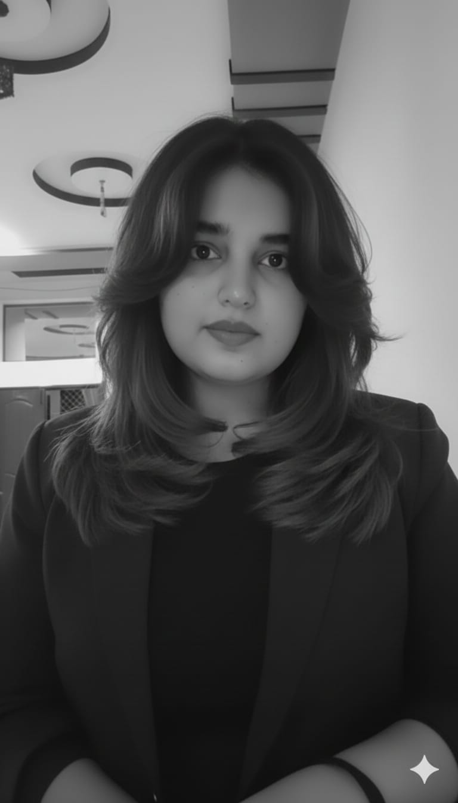

Isha Khalid

About Me
Aspiring web developer building practical, hands-on projects to strengthen my skills in HTML, CSS, and JavaScript, including this resume as a capstone project. I bring a unique blend of technical curiosity and strong administrative experience — as a Political Science graduate from the University of Sargodha, I've developed sharp organizational, research, and communication skills through academic coordination, teaching, and event management. I'm now applying that same discipline and attention to detail to web development, with a goal of creating clean, functional, and user-friendly digital experiences.
Education
- University of Sargodha - BS Political Science (2018-2022)
- Punjab Group of Colleges - FSc Pre-Medical (2019-2021)
- The Educators - Matric (2016-2018)
Work Experience
- Admission Coordinator - AIPSS Zia Campus (June 2026 - Present)
- Primary School Teacher - The Educators (October 2025 - May 2026)
- MUN Coordinator - University of Sargodha (2023 - 2025)
Skills
Professional Skills
- Event Management
- Academic Coordination
- Research and Analysis
- Communication and Presentation
- Leadership
- Critical Thinking
Digital Skills
- HTML
- Microsoft Office
- Canva-Graphic design and visual content creation
- AI Automation and Prompt Engineering
- Language Models-research,writing, and document drafting
- AI Image Generation
- AI Video Generation
- AI Audio Generation
- Capcut Editor Professional
Interpersonal Skills
- Teamwork
- Conflict Resolution
- Adaptability
- Time Management
Other Information